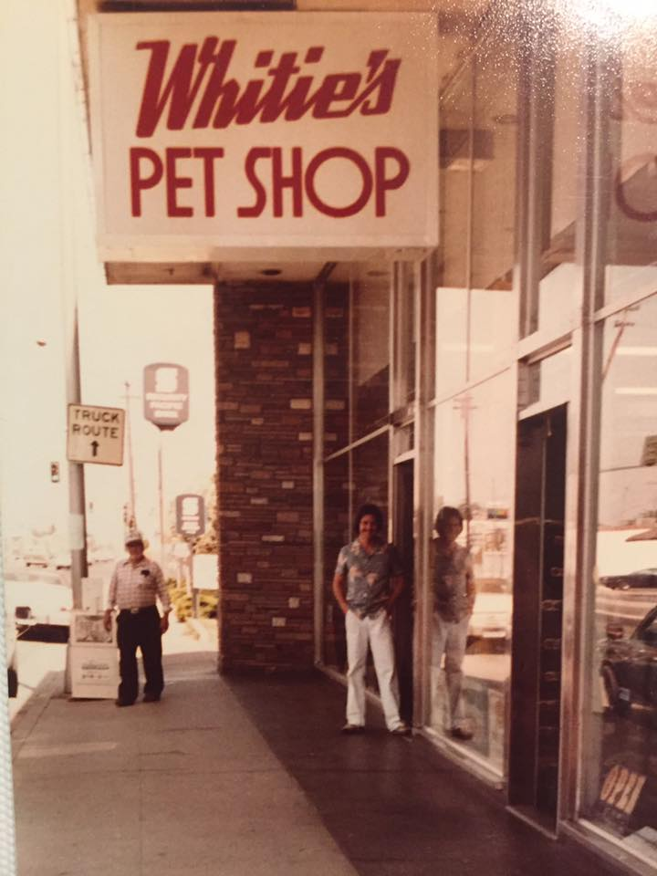

Swim Shady's New Home

Will the real Swim Shady please swim up. He's a new addition to my tank, and I remodeled just for him! While I was remodeling I decided to add more plants and hardscape to the tank to give it a more interesting and natural vibe. Swim Shady seems to enjoy his new home, and gets along great with his tank mates (as long as they don't get in his personal space too much!). Check out the "About" tab to follow along the process of remodeling and introducing Swim Shady to his new home.
My Favorite Place to Buy Aquarium Goodies.

My favorite place to buy supplies is from a locally owned business that has been around for ages called "Whities Pets". Everytime I go in there I am absolutely astounded at how well mainained their fish tanks are, they even have the names of those who take care of their show floor tanks! I would encourage you to shop around at your local animal stores as the quality is usually above average and most definitely better than local chain stores. Below you will find a map to my personal favorite local store and you can click on the image to the right to view their website and learn more!